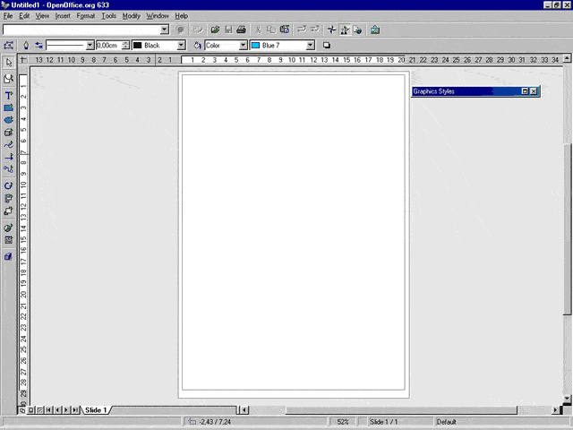
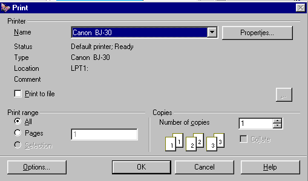

In 1937, the great Spanish painter Pablo Picasso amazed the World with his fascinating and dramatic masterpiece: Guernica. Fortunately, nowadays, we don't need to be excellent painters listed in Fine Art books to create drawings and other high quality graphic documents. Modern drawing software is enough. Among these applications, OpenOffice.org Draw makes our creative work easier and somehow more entertaining.
Before you start to learn the basic functionality of Draw, you should have an overview of the work area and tools with which you will get to work. When you open a new Draw document, a window like this will be displayed:

Just below the window title bar (the one with the butterfly logo) you can see three command bars. They are, in order of appearance:
The Menu bar lists the main Menus available in Draw. The Function bar displays the icons to access functions like Open, Save, Copy, Cut, Paste and other OpenOffice.org common tasks. The Object Bar includes some specific drawing tools that can be used to modify the appearance of an object when it is selected (line style, color and thickness; fill style and color).
Hint: Although several people think that these bars are unchangeable, this is not absolutely true. In fact, you can modify the icons and functions that appear on them according to your needs, by clicking with the right mouse button on the Main Toolbar or the Object Bar. A context menu will be displayed. Then, select 'Configure...' or 'Customize...' to alter the content of the bars. In addition to this, by selecting 'Visible Buttons' you can turn some buttons on/off. From the same context menu you can summon another bar, called the Options Bar that is disabled by default. It contains additional buttons to access useful positioning and modification tools.
To the left side of the Draw Window you will find the Main Toolbar. In it, there are tools you need to complete your Draw document. The base functionality of this bar will be discussed throughout this 'How-To'. Finally, at the bottom, there is the Status Bar. It displays very useful information such as: cursor location in the Draw document (expressed in coordinates), zoom percentage, template name, etc.
The 2 numbered bars that you can see next to the document area are the horizontal and vertical rulers. You can change the measurement units on them by right clicking on them to display the context menu where other units can be chosen. You do not need them? Then turn them off, selecting View-Rulers from the Menu bar. To make them visible again, simply repeat the same menu choice, so that the 'Rulers' item has a symbol of selection at its side.
If you jumped to this section directly without reading the previous one it would be a good idea to go back and read it, since there are terms defined above that will be used from this point onwards. However for those who are impatient, we will now discuss how to draw simple geometric shapes in a Draw document!
The figure you see to the right shows the Main Toolbar. The drawing tools that you will use in OpenOffice.org Draw reside here. To activate a specific tool, click on its icon. Each icon's button is of the 'toggle' type, so when you release your mouse button the button itself will change to a depressed style so that you can see that the tool is correctly selected. Try to select the rectangle tool... It is the fourth icon from the top...
Now, move your mouse pointer. You will notice that it has transformed into a cross with a little rectangle. To draw your first shape, follow this procedure:
Eureka! Your rectangle is displayed in all its magnificence! Looking at the Main Toolbar, you can see that the rectangle tool is selected no more. It exhibits this behavior because you have clicked on it 1 time. If you had clicked twice, the rectangle tool would have been selected until you chose another tool. So: 1 left click is equal to 1 drawing action, while 2 left clicks are equal to multiple drawing actions.
Hint: Surely you have noticed another feature of the Main Toolbar: a lot of icons have a little green triangle to their left. This symbol shows that each associated tool has a floating bar. To display it, click on the desired icon and hold the mouse button for few seconds. The floating bar should appear. You can move it anywhere in the document area simply by dragging it. This is a useful way to draw several shapes of the same type, but with different attributes. To close it and move back to the Main Toolbar, simply use the close button in the upper right corner of the floating bar.
The rectangle is a very simple shape to draw. The square is too. You can create one by selecting the square tool from the rectangle floating bar, and then repeating the steps listed for creating the rectangle. Nothing is easier! Of course OpenOffice.org Draw can be used to draw more complex shapes, for example: a circle, an ellipse or circle sections. To create such shapes you need to:
In addition to this common procedure, there are specific actions that need to be performed to draw or to modify some of the shapes that you can choose from the ellipse floating bar. Here they are:
If you have followed all of the procedures listed in the previous section, you may have too many shapes in your Draw document. What a confusion! Please, create a new blank Draw document by selecting File-New-Drawing from the Menu bar.
On your new white page, draw a rectangle. Look at it. It is filled with a light blue color and has small green squares along its perimeter. Light blue is the default fill color, while the small green squares are the resize handles and show that your rectangle is selected. Light blue is certainly a pretty color, but some among you may think that it is too coquettish and may wish to change it.
There are several ways to change the color of an object. The most common ones are:
Remember that whatever procedure you follow to change the object color, the object itself must be selected. To do this, simply left click on the object.
Hint: people who often draw web graphics are in the habit of using color expressed as hexadecimal values or web color names. A web safe color palette is a palette which contains only colors that will be displayed in a nearly identical way by different browsers on different platforms. To use this feature, follow these steps:
Color is only one of the object attributes you can modify. Left click somewhere in a document zone where there is nothing, to deselect your rectangle. Now, look at it again. You can see that its perimeter is a thin black line. You can change this perimeter's style and color!
Once more, a single action can be performed in several ways (don't forget to select your object by clicking on it):
Until this moment, we have spoken about object features that are related to the drawing appearance of an object. Now, we will go on to describe how to change the position and size of an object. Select the rectangle tool from the Main Toolbar and draw a second rectangle in an empty zone of your Draw document. The new rectangle will be automatically selected when you release the left mouse button. It has already been said that the small green squares are called 'resize handles'. You can use them to modify the size of your object in this way:
When you drag a middle resize handle you can, however, proportionally change the width and height at the same time. Simply hold the [SHIFT] key down while you perform the action.
You are now able to modify the size of your rectangle, but you may want to change its position too. You can do so in this way:
Hint: in some drawing projects, you may need to position or
to resize your objects in a more accurate way than what you can do visually.
In OpenOffice.org you can perform this action by right clicking on an object
and selecting 'Position and Size' from the context menu.
In the Dialog window that will be displayed, you'll be able to change size and
position using the default measurement unit. Alternatively, you can improve
the accuracy of these actions by displaying a dotted grid as a background to
your document. Right click on a command bar to display the context menu, then
select 'Options Bar'. In the new bar that should appear
just above the status bar, click on the 'Display Grid' icon
 . The grid
attributes can be modified by choosing Tools-Options-Drawing-Grid
from the Menu bar.
. The grid
attributes can be modified by choosing Tools-Options-Drawing-Grid
from the Menu bar.
When you proceed to modify your drawing documents, you may find that an object will overlap another object, but not in the stacking sequence that you would like. Of course you can change the order in which your objects are layered. There are two main ways to do so:
There are several ways in which you can exploit the drawing documents you create with OpenOffice.org. The most traditional way is to print them. Since printing systems can vary substantially from platform to platform, this 'How-to' will describe only the printing commands for the Microsoft Windows OS. However, many OpenOffice.org dialog windows are the same across every OS.
Before trying to print your document, it would be a wise thing for you to save it on your hard disk. If the document is untitled, choose File-Save as... from the main menu. If you have already saved it before, simply press [CTRL]+S on your keyboard. Now, whatever happens during the printing operation, your work will not be lost.
You can select the printer with which you will print by selecting File-Printer Settings... from the Menu bar. In the Dialog box, the default printer name should be already present in the drop down list box labeled 'Name'. Click on the 'Properties' button to modify the settings of your printer driver.
Now you are ready to print. You can do it directly by clicking on the 'Print
File directly' icon  on the Function Bar. Otherwise you can make some
final modifications through the Print Dialog Window. You can access this dialog
by:
on the Function Bar. Otherwise you can make some
final modifications through the Print Dialog Window. You can access this dialog
by:
The Print Dialog Window looks like this:

The upper part of the window is identical to the Printer settings dialog, and you can modify it in the same way. The only addition is the 'Print to file' check box. If you check this option, a 'Save as...' dialog will be displayed so that you can choose the name of a file to which your document will be printed. This function is particularly useful to print a document created on a notebook which has no printer attached, or to transfer such a file to a workstation outside your LAN and print it there.
The 'Print range' section allows you to determine what pages of your document should be printed, while the 'Copies' section can be used to modify the number of copies of the document to be printed.
In the bottom right corner, you will find the 'Options' button. By clicking on it, the Options Dialog Window will appear. There, you will be able to change additional settings such as: the printer quality, page settings and footnote text (page name, date, time).
Finally, click the 'OK' button in the Print Dialog Window to get your document printed.
This section, like the previous one, describes the OpenOffice.org Suite running on a Microsoft Windows OS. Most suggestions are applicable to other platforms, but you should take into consideration the differences between the printing subsystems.
B. The colors printed by your printer are not the same ones displayed on the screen:
Modern color printers use a % mix of 4 inks (or 6 in the newest ones) to reproduce the colors that our eyes are normally able to see. In OpenOffice.org Draw, to edit a color using the exact percentage of ink you have to:
Otherwise, you can use/modify a ready CMYK palette:
C. The drawings near the top or bottom page borders are not printed properly:
You have probably set the margins of the Draw document page too near the print area borders of your printer. You have to:
Remember to arrange your drawing, making sure that every object is within the new page margins.
Hint: OpenOffice.org Draw is a very powerful application, but it cannot improve the capabilities of your hardware. So, if you think that your printed document is not up to scratch, please consider the quality of your hardware too. Especially when you are printing documents with photos or images with million colors, you should own a Photo printer and use special glossy paper.
Original Author: Gianluca Turconi
Acknowledgments: Grateful thanks to James Treleaven for his valuable collaboration.
Integration by: N/A
Last modified on: February 11, 2001
Organization contact: OpenOffice.org Documentation Project http://documentation.openoffice.org/index.html